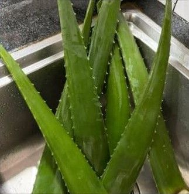
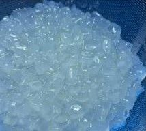

An toàn thực phẩm
Nha đam ăn sao cho hết đắng: lần trước em hỏng, lần này 9 điểm – và điều nên biết về lớp nhựa vàng

Cây nha đam nhà em được em gái tặng, càng chăm càng to, to đến mức em phải thay chậu, rồi đến Tết năm nay nó còn ra cả hoa – 46 mùa xuân em mới được tận mắt nhìn thấy nha đam ra hoa đấy các bác ạ 😂 Bẹ nặng quá cây nghiêng siêu vẹo, thế là em “giải thoát” cho nó mấy bẹ để làm sữa chua nha đam ăn cho ngập răng.

Nói thật với các chị em: lần trước em làm hỏng, hì hục bao lâu mà vẫn đắng nghét. Lần này thì thành công rực rỡ, công đoạn lại rút ngắn hẳn, em tự chấm 9 điểm, cố gắng lần sau 10 😜 Vậy cái đắng ấy ở đâu ra?
Đắng là do lớp nhựa vàng sát vỏ
Cắt ngang một bẹ nha đam sẽ thấy ba phần: vỏ xanh ở ngoài, phần thịt trong veo ở giữa, và nằm sát vỏ là một lớp nhựa màu vàng rỉ ra khi cắt. Lớp nhựa vàng này chứa aloin – chính nó làm nha đam đắng, và cũng là chất gây nhuận tràng mạnh.
Các cơ quan y tế Mỹ cho biết: uống nhựa lô hội có thể gây đau bụng, quặn bụng, tiêu chảy. Năm 2002, Cục Quản lý Thực phẩm và Dược phẩm Mỹ (FDA) đã buộc các nhà sản xuất bỏ nhựa lô hội ra khỏi thuốc nhuận tràng bán không cần đơn vì thiếu dữ liệu an toàn. Nên chuyện “còn đắng” không chỉ là dở, mà là dấu hiệu mình chưa bỏ sạch phần không nên ăn.
Các chị em có thể làm thế này
- Chọn bẹ già, dày, cắt sát gốc. Để bẹ dựng đứng chừng vài phút cho nhựa vàng chảy bớt ra chỗ vết cắt.
- Rửa sạch, cắt bỏ hai mép gai, rồi gọt sạch vỏ xanh, gọt dày tay một chút để không sót lớp nhựa vàng sát vỏ.
- Cắt phần thịt trong thành hạt lựu, xả dưới vòi nước cho trôi hết nhớt vàng; có thể ngâm thêm nước sạch rồi thay nước vài lần.
- Chần qua nước sôi một lúc rồi vớt ra thả vào nước lạnh, thịt nha đam giòn hơn và bớt nhớt.
- Nếm thử một miếng: còn đắng là chưa sạch, rửa tiếp nhé.
Xong là làm được đủ món: sữa chua nha đam hạt chia như em, chè nha đam như bếp trưởng nhà em nấu, hay thả vào nước đường phèn ướp lạnh.
Ai nên cẩn thận?
- Bà bầu, mẹ cho con bú, trẻ nhỏ: nên hỏi bác sĩ trước khi ăn uống nha đam thường xuyên.
- Người đang dùng thuốc tim (như digoxin), thuốc lợi tiểu: dùng nhựa lô hội nhiều có thể làm tăng tác dụng phụ – hỏi bác sĩ.
- Đang tiêu chảy, đau bụng thì để hôm khác hãy ăn.
- Nha đam là món ăn vặt mát miệng thôi, không phải thuốc chữa bệnh, các chị em đừng tin mấy lời quảng cáo “nha đam thải độc” nhé.
Còn em thì vẫn kiểu nhà em đấy: ăn món gì là ăn liền cho chán, xong một thời gian dài mới dám ăn lại 😂😂😂
Kinh nghiệm bếp nhà, không thay tư vấn bác sĩ. Thông tin về nhựa lô hội theo NCCIH và NIEHS (Hoa Kỳ).
Em tham khảo: Bài Facebook của Cô Kỹ (16/02, 17/01, 24/04/2026); Trung tâm Quốc gia về Sức khỏe Bổ sung và Tích hợp Hoa Kỳ (NCCIH) – trang Aloe Vera; Viện Khoa học Sức khỏe Môi trường Hoa Kỳ (NIEHS) – trang Aloe; quyết định năm 2002 của FDA về thuốc nhuận tràng chứa nhựa lô hội.
Kinh nghiệm và kiến thức bếp nhà, em viết lại theo cách hiểu của em – không thay lời khuyên của bác sĩ, chuyên gia dinh dưỡng. Thấy chỗ nào chưa đúng, các bác nhắn em sửa nhé.